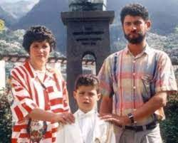
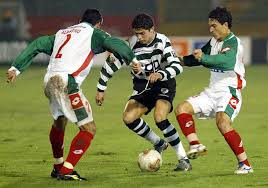
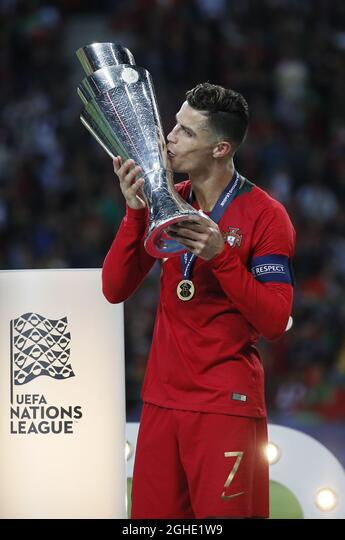
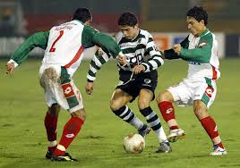
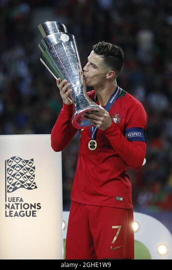

Brief History and Origin of Cristiano Ronaldo
Early Life
Born Cristiano Ronaldo dos Santos Aveiro on February 5, 1985, in Funchal, Madeira, Portugal, a small island off the western coast of the country, Ronaldo is the youngest of four children born to Maria Dolores dos Santos and Jose Dinis Aveiro. He was named after Ronald Reagan, one of his father's favorite actors. Ronaldo grew up in a largely working class neighborhood in a small tin-roofed home that overlooked the ocean. His early life was shaped by hardship; his father, a gardener, often drank too much, and eventually died from kidney problems in 2005. To help keep the children fed, and maintain some financial stability, Ronaldo's mother worked as a cook and cleaning person.
Intro to Soccer
It was through his dad's work as an equipment manager at a boy's club that Ronaldo was first introduced to the game of soccer. By the time he was 10 years old, he was already recognized as a phenomenon—a kid who ate, slept and drank the game. "All he wanted to do as a boy was play football," his godfather, Fernao Sousa, recalled for British reporters, adding, "He loved the game so much he'd miss meals or escape out of his bedroom window with a ball when he was supposed to be doing his homework."
By his early teens, Ronaldo's talent and legend had grown considerably. After a stint with Nacional da liha da Madeira, he signed with Sporting Portugal in 2001. That same year, at the tender age of 16, Ronaldo turned heads with a mesmerizing performance against Manchester United, wowing even his opponents with his footwork and deft skill. He made such an impression that a number of United players asked their manager to try and sign the young player. It wasn't long before the club paid Ronaldo's team more than £12 million for his services - a record fee for a player of his age.

Success with Manchester United
Ronaldo did not disappoint the soccer world. He showed his promise early on in the 2004 FA Cup final, scoring the team's first three goals and helping them capture the championship. In 2008, a year after signing a five-year, £31 million contract, Ronaldo again justified his high salary when he put together one of the club's finest seasons in history, setting a franchise record for goals scored (42), and earning himself the FIFA World of the Year honor. In all, Ronaldo helped steer Manchester United to three premier league titles.
But Ronaldo's time in England was marred by his mother's 2007 struggle with breast cancer as well as his father's death from alcohol-related illness. The latter was especially hard for Ronaldo as the two had been close, and the young athlete had often pushed for his father to enter rehab and address his drinking. His father, however, never accepted the offer.

Real Madrid & National Victory
As lauded as Ronaldo was on the field for Manchester United, his commitment to the club came under constant question. Speculation swirled that he wanted to play elsewhere. So in 2009, when Spanish soccer club Real Madrid agreed to pay United a record $131 million for the chance to sign him, nobody was all that surprised to see Ronaldo leave United.
"I know that they are going to demand a lot of me to be successful at the club and I know that I'm going to have much more pressure than at Manchester United because I was there for many years," Ronaldo told reporters. "But it means a new challenge and is going to help me be the best footballer."
In addition to his FIFA World Player of the year award, Ronaldo has also won the coveted Ballon d'OR, the Golden Boot, and been named the UEFA Club Forward of the Year, among other honors during the course of his career.
On July 10, 2016, Ronaldo added another emotional victory to his accolades, leading Portugal to the European Championship final against France as his national team's captain. Although he was sidelined after suffering a knee injury 25 minutes into the match, Portugal went on to win the championship title 1-0, their first international trophy. Ronaldo's teammates said that he motivated them as team captain from the sidelines. "He gave us a lot of confidence and he said, 'Listen people, I'm sure we will win this Euro so stay together and fight for it,’” full-back Cedric Soares said after Portugal’s victory.
"This is one of the happiest moments in my career,” Ronaldo commented. ”I’ve always said I wanted to win a trophy with the national team and make history. And I did it. Thank God, things went well for us."
In January 2017, Ronaldo won FIFA's 2016 best player of the year for the fourth time, beating out Lionel Messi. Ronaldo’s 2016 wins included the European Championship, Champions League, and Club World Cup, plus individual awards from UEFA and France Football magazine, according to USA Today. In his acceptance speech, Ronaldo said: "2016 was the best year of my career."

Synopsis
It was through his dad's work as an equipment manager at a boy's club that Ronaldo was first introduced to the game of soccer. By the time he was 10 years old, he was already recognized as a phenomenon—a kid who ate, slept and drank the game. "All he wanted to do as a boy was play football," his godfather, Fernao Sousa, recalled for British reporters, adding, "He loved the game so much he'd miss meals or escape out of his bedroom window with a ball when he was supposed to be doing his homework." By his early teens, Ronaldo's talent and legend had grown considerably. After a stint with Nacional da liha da Madeira, he signed with Sporting Portugal in 2001. That same year, at the tender age of 16, Ronaldo turned heads with a mesmerizing performance against Manchester United, wowing even his opponents with his footwork and deft skill. He made such an impression that a number of United players asked their manager to try and sign the young player. It wasn't long before the club paid Ronaldo's team more than £12 million for his services - a record fee for a player of his age.
Ronaldo did not disappoint the soccer world. He showed his promise early on in the 2004 FA Cup final, scoring the team's first three goals and helping them capture the championship. In 2008, a year after signing a five-year, £31 million contract, Ronaldo again justified his high salary when he put together one of the club's finest seasons in history, setting a franchise record for goals scored (42), and earning himself the FIFA World of the Year honor. In all, Ronaldo helped steer Manchester United to three premier league titles. But Ronaldo's time in England was marred by his mother's 2007 struggle with breast cancer as well as his father's death from alcohol-related illness. The latter was especially hard for Ronaldo as the two had been close, and the young athlete had often pushed for his father to enter rehab and address his drinking. His father, however, never accepted the offer.
As lauded as Ronaldo was on the field for Manchester United, his commitment to the club came under constant question. Speculation swirled that he wanted to play elsewhere. So in 2009, when Spanish soccer club Real Madrid agreed to pay United a record $131 million for the chance to sign him, nobody was all that surprised to see Ronaldo leave United. "I know that they are going to demand a lot of me to be successful at the club and I know that I'm going to have much more pressure than at Manchester United because I was there for many years," Ronaldo told reporters. "But it means a new challenge and is going to help me be the best footballer." In addition to his FIFA World Player of the year award, Ronaldo has also won the coveted Ballon d'OR, the Golden Boot, and been named the UEFA Club Forward of the Year, among other honors during the course of his career. On July 10, 2016, Ronaldo added another emotional victory to his accolades, leading Portugal to the European Championship final against France as his national team's captain. Although he was sidelined after suffering a knee injury 25 minutes into the match, Portugal went on to win the championship title 1-0, their first international trophy. Ronaldo's teammates said that he motivated them as team captain from the sidelines. "He gave us a lot of confidence and he said, 'Listen people, I'm sure we will win this Euro so stay together and fight for it,’” full-back Cedric Soares said after Portugal’s victory. "This is one of the happiest moments in my career,” Ronaldo commented. ”I’ve always said I wanted to win a trophy with the national team and make history. And I did it. Thank God, things went well for us." In January 2017, Ronaldo won FIFA's 2016 best player of the year for the fourth time, beating out Lionel Messi. Ronaldo’s 2016 wins included the European Championship, Champions League, and Club World Cup, plus individual awards from UEFA and France Football magazine, according to USA Today. In his acceptance speech, Ronaldo said: "2016 was the best year of my career."
Cristiano Ronaldo was born on February 5, 1985, in Funchal, Madeira, Portugal. Manchester United paid £12 million to sign him in 2003—a record fee for a player of his age. In the 2004 FA Cup final, he scored Manchester's first three goals and helped them capture the championship. In 2008, he set a franchise record for goals scored. In 2009, Real Madrid paid a record $131 million for his services.